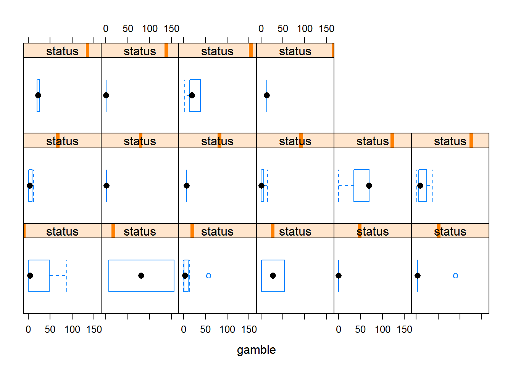
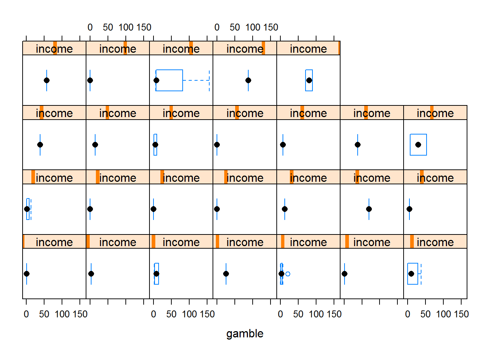
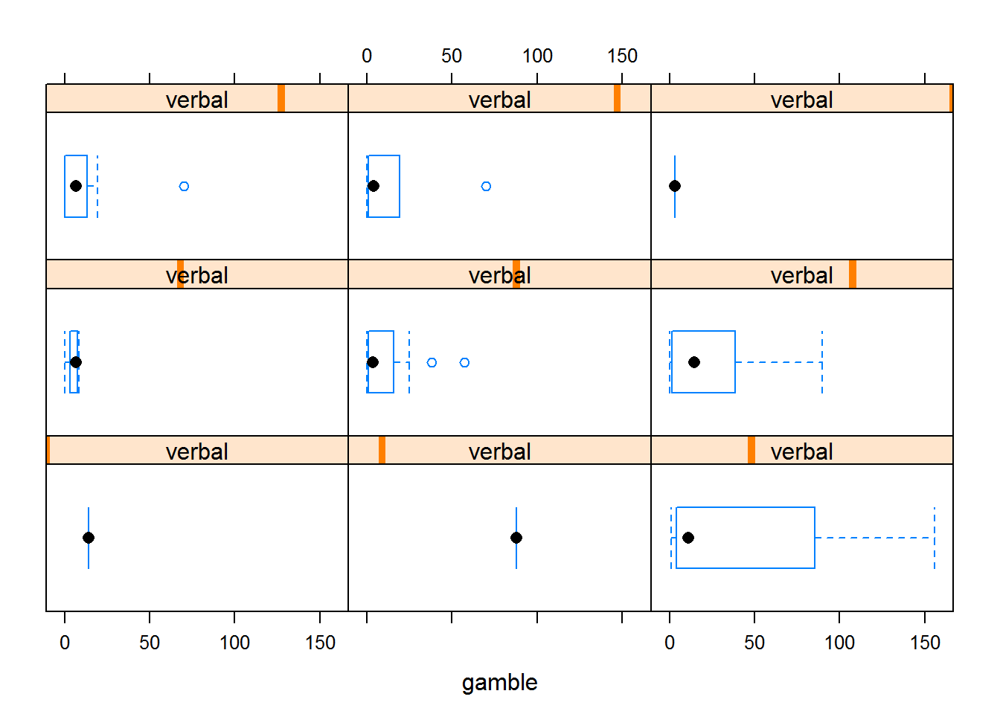
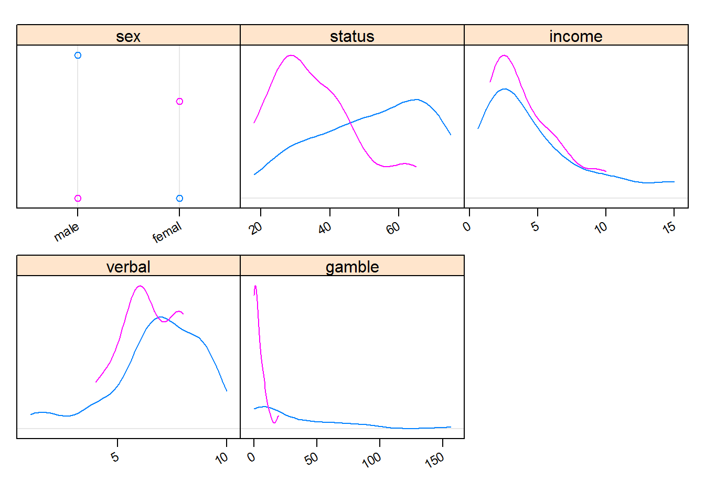
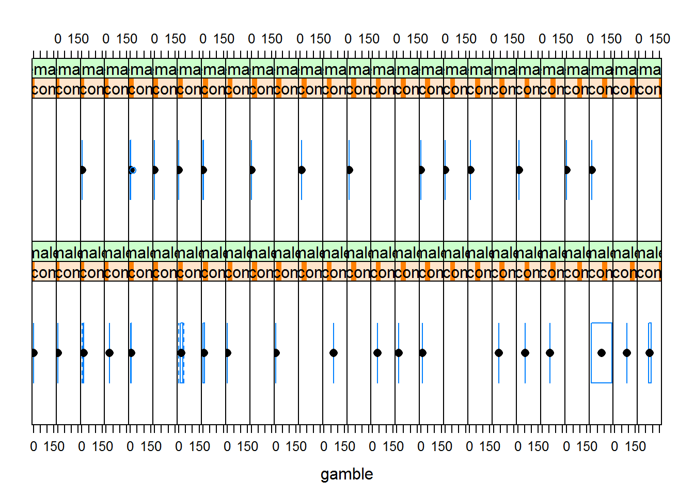

library(lattice)
library(latticeExtra)## Loading required package: RColorBrewerlibrary(MASS)
library(e1071)
df <- read.table("teengambling.txt")
df$sex <- factor(df$sex, labels = c("male", "female"))
contrasts(df$sex) <- contr.sum
head(df) ## sex status income verbal gamble
## 1 female 51 2.00 8 0.0
## 2 female 28 2.50 8 0.0
## 3 female 37 2.00 6 0.0
## 4 female 28 7.00 4 7.3
## 5 female 65 2.00 8 19.6
## 6 female 61 3.47 6 0.1Поизучаем то, что у нас есть.
##contrasts(df$sex) <- contr.sum
bwplot(~ gamble | status, data = df) 
bwplot( ~gamble | income, data = df)
bwplot( ~gamble | verbal, data = df)
marginal.plot(df, data=df, groups=sex)  Это наводит на мысль о том, что нужно будет изучить мужчин и женщин отдельно.
Какие признаки неважны?
l = lm(gamble ~ ., data=df)
summary(l)##
## Call:
## lm(formula = gamble ~ ., data = df)
##
## Residuals:
## Min 1Q Median 3Q Max
## -51.082 -11.320 -1.451 9.452 94.252
##
## Coefficients:
## Estimate Std. Error t value Pr(>|t|)
## (Intercept) 11.49649 15.48722 0.742 0.4620
## sex1 11.05917 4.10556 2.694 0.0101 *
## status 0.05223 0.28111 0.186 0.8535
## income 4.96198 1.02539 4.839 1.79e-05 ***
## verbal -2.95949 2.17215 -1.362 0.1803
## ---
## Signif. codes: 0 '***' 0.001 '**' 0.01 '*' 0.05 '.' 0.1 ' ' 1
##
## Residual standard error: 22.69 on 42 degrees of freedom
## Multiple R-squared: 0.5267, Adjusted R-squared: 0.4816
## F-statistic: 11.69 on 4 and 42 DF, p-value: 1.815e-06Status и Verbal, кажется, не из нужного. Попробуем AIC.
stepAIC(l)## Start: AIC=298.18
## gamble ~ sex + status + income + verbal
##
## Df Sum of Sq RSS AIC
## - status 1 17.8 21642 296.21
## <none> 21624 298.18
## - verbal 1 955.7 22580 298.21
## - sex 1 3735.8 25360 303.67
## - income 1 12056.2 33680 317.00
##
## Step: AIC=296.21
## gamble ~ sex + income + verbal
##
## Df Sum of Sq RSS AIC
## <none> 21642 296.21
## - verbal 1 1139.8 22781 296.63
## - sex 1 5787.9 27429 305.35
## - income 1 13236.1 34878 316.64##
## Call:
## lm(formula = gamble ~ sex + income + verbal, data = df)
##
## Coefficients:
## (Intercept) sex1 income verbal
## 12.659 11.480 4.898 -2.747Убрался status, а verbal остался. Давайте статус уберем из модели, посмотрим на новую значимость критериев.
l <- update(l, . ~ . -status)
summary(l)##
## Call:
## lm(formula = gamble ~ sex + income + verbal, data = df)
##
## Residuals:
## Min 1Q Median 3Q Max
## -50.639 -11.765 -1.594 9.305 93.867
##
## Coefficients:
## Estimate Std. Error t value Pr(>|t|)
## (Intercept) 12.6589 14.0076 0.904 0.3712
## sex1 11.4801 3.3853 3.391 0.0015 **
## income 4.8981 0.9551 5.128 6.64e-06 ***
## verbal -2.7468 1.8253 -1.505 0.1397
## ---
## Signif. codes: 0 '***' 0.001 '**' 0.01 '*' 0.05 '.' 0.1 ' ' 1
##
## Residual standard error: 22.43 on 43 degrees of freedom
## Multiple R-squared: 0.5263, Adjusted R-squared: 0.4933
## F-statistic: 15.93 on 3 and 43 DF, p-value: 4.148e-07Удалим еще и verbal.
l <- update(l, . ~ . -verbal)
summary(l)##
## Call:
## lm(formula = gamble ~ sex + income, data = df)
##
## Residuals:
## Min 1Q Median 3Q Max
## -49.757 -11.649 0.844 8.659 100.243
##
## Coefficients:
## Estimate Std. Error t value Pr(>|t|)
## (Intercept) -6.776 5.501 -1.232 0.22459
## sex1 10.817 3.404 3.177 0.00272 **
## income 5.172 0.951 5.438 2.24e-06 ***
## ---
## Signif. codes: 0 '***' 0.001 '**' 0.01 '*' 0.05 '.' 0.1 ' ' 1
##
## Residual standard error: 22.75 on 44 degrees of freedom
## Multiple R-squared: 0.5014, Adjusted R-squared: 0.4787
## F-statistic: 22.12 on 2 and 44 DF, p-value: 2.243e-07bwplot(~gamble | income * sex, data = df)
Кажется, мальчики играют больше + чем больше доход, тем больше играют.
Осталось изучить взаимную связь.
x <- lm(gamble ~ sex * income, data=df)
summary(x)##
## Call:
## lm(formula = gamble ~ sex * income, data = df)
##
## Residuals:
## Min 1Q Median 3Q Max
## -56.522 -4.860 -1.790 6.273 93.478
##
## Coefficients:
## Estimate Std. Error t value Pr(>|t|)
## (Intercept) 0.2402 5.6001 0.043 0.96599
## sex1 -2.8998 5.6001 -0.518 0.60724
## income 3.3465 1.0723 3.121 0.00322 **
## sex1:income 3.1716 1.0723 2.958 0.00502 **
## ---
## Signif. codes: 0 '***' 0.001 '**' 0.01 '*' 0.05 '.' 0.1 ' ' 1
##
## Residual standard error: 20.98 on 43 degrees of freedom
## Multiple R-squared: 0.5857, Adjusted R-squared: 0.5568
## F-statistic: 20.26 on 3 and 43 DF, p-value: 2.451e-08stepAIC(x)## Start: AIC=289.92
## gamble ~ sex * income
##
## Df Sum of Sq RSS AIC
## <none> 18930 289.92
## - sex:income 1 3851.4 22781 296.63##
## Call:
## lm(formula = gamble ~ sex * income, data = df)
##
## Coefficients:
## (Intercept) sex1 income sex1:income
## 0.2402 -2.8998 3.3465 3.1716anova(l, x)## Analysis of Variance Table
##
## Model 1: gamble ~ sex + income
## Model 2: gamble ~ sex * income
## Res.Df RSS Df Sum of Sq F Pr(>F)
## 1 44 22781
## 2 43 18930 1 3851.4 8.7486 0.005018 **
## ---
## Signif. codes: 0 '***' 0.001 '**' 0.01 '*' 0.05 '.' 0.1 ' ' 1Видимо, мальчики с высоким доходом действительно играют больше. Это еще раз подтверждает,что нужно изучить девочек отдельно, т.к. если мальчики более активно влияют на картину, то наша модель недостаточно точна для предсказания девочек.
df.male <- subset(df, sex=="male"); df.male$sex <- NULL
l.male <- lm(gamble ~ ., data=df.male); summary(l.male)##
## Call:
## lm(formula = gamble ~ ., data = df.male)
##
## Residuals:
## Min 1Q Median 3Q Max
## -56.654 -12.104 -2.061 7.729 83.903
##
## Coefficients:
## Estimate Std. Error t value Pr(>|t|)
## (Intercept) 27.6354 22.2192 1.244 0.225600
## status -0.1456 0.4181 -0.348 0.730748
## income 6.0291 1.3288 4.537 0.000135 ***
## verbal -2.9748 3.0596 -0.972 0.340617
## ---
## Signif. codes: 0 '***' 0.001 '**' 0.01 '*' 0.05 '.' 0.1 ' ' 1
##
## Residual standard error: 26.45 on 24 degrees of freedom
## Multiple R-squared: 0.5536, Adjusted R-squared: 0.4977
## F-statistic: 9.919 on 3 and 24 DF, p-value: 0.0001936Вновь status/verbal оказываются не очень важны, посмотрим, что удалит AIC.
stepAIC(l.male)## Start: AIC=187.1
## gamble ~ status + income + verbal
##
## Df Sum of Sq RSS AIC
## - status 1 84.8 16877 185.24
## - verbal 1 661.4 17454 186.18
## <none> 16792 187.10
## - income 1 14404.2 31197 202.44
##
## Step: AIC=185.24
## gamble ~ income + verbal
##
## Df Sum of Sq RSS AIC
## <none> 16877 185.24
## - verbal 1 1578.9 18456 185.75
## - income 1 16576.4 33454 202.40##
## Call:
## lm(formula = gamble ~ income + verbal, data = df.male)
##
## Coefficients:
## (Intercept) income verbal
## 23.834 6.168 -3.629Действительно, status и тут неважен. verbal учитывать не будем тоже.
l.male <- lm(gamble ~ income, data=df.male)
summary(l.male)##
## Call:
## lm(formula = gamble ~ income, data = df.male)
##
## Residuals:
## Min 1Q Median 3Q Max
## -56.522 -16.402 -2.342 7.901 93.478
##
## Coefficients:
## Estimate Std. Error t value Pr(>|t|)
## (Intercept) -2.660 8.021 -0.332 0.743
## income 6.518 1.255 5.195 2.01e-05 ***
## ---
## Signif. codes: 0 '***' 0.001 '**' 0.01 '*' 0.05 '.' 0.1 ' ' 1
##
## Residual standard error: 26.64 on 26 degrees of freedom
## Multiple R-squared: 0.5093, Adjusted R-squared: 0.4905
## F-statistic: 26.99 on 1 and 26 DF, p-value: 2.01e-05Анализ для мальчиков подтверждает то, что мы получили в общей картине – видимо, или они похожи на девочек( но график в самом начале заставляет в этом сомневаться) или “забивают” их.
Аналогичный анализ проводим для девочек.
df.female <- subset(df, sex=="female")
df.female$sex <- NULL
l.female <- lm(gamble ~ ., data=df.female)
summary(l.female)##
## Call:
## lm(formula = gamble ~ ., data = df.female)
##
## Residuals:
## Min 1Q Median 3Q Max
## -8.6972 -2.0567 -0.5836 2.6533 11.2536
##
## Coefficients:
## Estimate Std. Error t value Pr(>|t|)
## (Intercept) -5.3778 7.1848 -0.749 0.4657
## status 0.2073 0.1038 1.997 0.0643 .
## income 0.6813 0.5177 1.316 0.2079
## verbal -0.1392 0.9259 -0.150 0.8825
## ---
## Signif. codes: 0 '***' 0.001 '**' 0.01 '*' 0.05 '.' 0.1 ' ' 1
##
## Residual standard error: 4.974 on 15 degrees of freedom
## Multiple R-squared: 0.2228, Adjusted R-squared: 0.06738
## F-statistic: 1.433 on 3 and 15 DF, p-value: 0.2723stepAIC(l.female)## Start: AIC=64.47
## gamble ~ status + income + verbal
##
## Df Sum of Sq RSS AIC
## - verbal 1 0.560 371.70 62.499
## <none> 371.14 64.470
## - income 1 42.854 413.99 64.547
## - status 1 98.666 469.80 66.950
##
## Step: AIC=62.5
## gamble ~ status + income
##
## Df Sum of Sq RSS AIC
## <none> 371.70 62.499
## - income 1 43.643 415.34 62.608
## - status 1 102.127 473.82 65.111##
## Call:
## lm(formula = gamble ~ status + income, data = df.female)
##
## Coefficients:
## (Intercept) status income
## -6.1437 0.2031 0.6862l.female <- update(l.female, . ~ . -verbal)
summary(l.female)##
## Call:
## lm(formula = gamble ~ status + income, data = df.female)
##
## Residuals:
## Min 1Q Median 3Q Max
## -8.5269 -2.0648 -0.4493 2.7694 11.1694
##
## Coefficients:
## Estimate Std. Error t value Pr(>|t|)
## (Intercept) -6.14371 4.91115 -1.251 0.2289
## status 0.20311 0.09687 2.097 0.0523 .
## income 0.68619 0.50064 1.371 0.1894
## ---
## Signif. codes: 0 '***' 0.001 '**' 0.01 '*' 0.05 '.' 0.1 ' ' 1
##
## Residual standard error: 4.82 on 16 degrees of freedom
## Multiple R-squared: 0.2216, Adjusted R-squared: 0.1244
## F-statistic: 2.278 on 2 and 16 DF, p-value: 0.1347Странно, но у девочек income оказался неважным фактором. Видимо, для них будет адекватным рассмотреть просто зависимость от статуса?
l.female.cut <- update(l.female, . ~ . -income)
summary(l.female.cut)##
## Call:
## lm(formula = gamble ~ status, data = df.female)
##
## Residuals:
## Min 1Q Median 3Q Max
## -7.329 -2.810 -1.376 2.309 11.617
##
## Coefficients:
## Estimate Std. Error t value Pr(>|t|)
## (Intercept) -1.01592 3.26284 -0.311 0.759
## status 0.13844 0.08676 1.596 0.129
##
## Residual standard error: 4.943 on 17 degrees of freedom
## Multiple R-squared: 0.1303, Adjusted R-squared: 0.07909
## F-statistic: 2.546 on 1 and 17 DF, p-value: 0.129summary(aov(gamble ~ income * status, data = df.female) )## Df Sum Sq Mean Sq F value Pr(>F)
## income 1 3.7 3.72 0.166 0.6894
## status 1 102.1 102.13 4.563 0.0496 *
## income:status 1 36.0 35.96 1.607 0.2243
## Residuals 15 335.7 22.38
## ---
## Signif. codes: 0 '***' 0.001 '**' 0.01 '*' 0.05 '.' 0.1 ' ' 1Видимо, так и есть: для девочек важен статус.